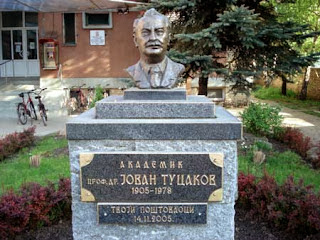
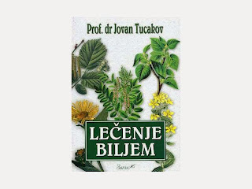
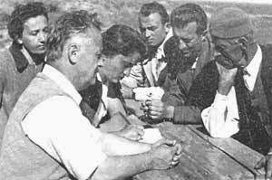

O meni
Nasleđe je ono što nas određuje, olakšava i navodi u životu. Imam sreću da sam potomak velikog i priznatog Jovana Tucakova (1905.god. - 1978. god.). Svetski priznati doktor nauka, travar, farmaceut, akademik... rodom iz Čuruga, vojvođanske vašorice, Jovan Tucakov je moj pradeda. On je inače, autor prvog udžbenika farmakognozije na srpskom jeziku i veliki broj monografija i knjiga čija su zajednička tematika lekovito bilje.
Objavio je preko 200 naučnih radova od kojih je najveći deo bio posvećen bilju i njihov upotrebi u lečenju. Jedna od najpoznatijih knjiga mu je LEČENJE BILJEM. Završio je dva Farmaceutska fakulteta, jedan u Zagrebu 1928. godine, a drugi u Francuskoj pet godina kasnije, gde je 1934. godine odbranio i doktorsku disertaciju.
Za redovnog člana Srpske akademije nauka i umetnosti (SANU) u Beogradu izabran je 1974. godine, a Francuske akademije farmacije1965. godine, dok je tri godine kasnije izabran i za člana Akademije za kozmetologiju i dermatologiju u Parizu. Bio je jedan od osnivača i upravnik Instituta za proučavanje lekovitog bilja Dr Josif Pančić.
Profesor Tucakov - bez njega, a ipak sa njim
U sećanjima na zaslužne istoričare zdravstvene kulture svakako da značajno mesto zauzima njen dugogodišnji predsednik, prof. dr Jovan Tucakov, redovni član SANU i brojnih akademija Francuske (farmacije, zatim dermatologije i kosmologije u Parizu); doživotni član Kraljevskog Britanskog farmaceutskog društva u Londonu; počasni doktor Univerziteta u Klerman Feranu; Lavoazjeova instituta u Parizu kao i brojnih naučnih društava Belgije, Holandije, Italije, Grčke i Poljske.
Bez NJEGA - a sa NJIM znači da period od četvrt veka samo čini da se bez NJEGA samo još više zapaža veličina jedne tako značajne osobe. I podvlači velika vrednost takvoga gorostasa. Period od 25 godina od kako je Naučno društvo za istoriju zdravstvene kulture lišeno njegove kohezivne energije, počelo postepeno da se osipa, prestaje sa radom, posustaje.
pak, nije PROFESOR, zaboravljen. Posle Njegovog odlaska brojni stručni i naučni časopisi posvetili su Mu veliku pažnju. I mi, etnolozi čiji je redovni član bio, trudili smo se da njegov doprinos i zdravstvenoj kulturi i etnologiji istaknemo. A kada je u Institutu za lekovito bilje slavljena pedesetogodišnjica postojanja, izdata je i posebna publikacija SEĆANJA (Beograd 1988.) na njihovog osnivača Jovana Tucakova, kome, i na taj način rekoše svoje i naše Hvala. I tada (1988) i sada bez Njegovog glasa, i prepoznatljivog lika i nižeg stasa, dok čitam Njegove radove, ili ovu knjigu Sećanja, ili, čak samo moj opširan rad “Skica za portret akademika prof. dr Jovana Tucakova” izgleda mi kao jedan novi susret sa NJIM. I vidim prekoran pogled.
Pitanje: “ Šta je sa društvom? Radovima? Dokle oklevanje? U ofanzivu, nastavljači! Stopama Vuka i svih prethodnika,” kao da kaže- “Moja je poruka”. Jedino čime bi se mi mogli odbraniti, jeste da je Njegov veliki opus, Njegova sledbenost Vuku i narodnoj terminologiji i kod većine naših istraživača, prisutna. Tucakova bi obradovala realnost da se danas sve više lekovito bilje koristi. Proučeno, pažljivo brano i sušeno, ili kao farmaceutski proizvod reklamirano i masovno za očuvanje zdravlja korišćeno.
Srebrica Knežević, Filozofski fakultet Beograd, 2003.